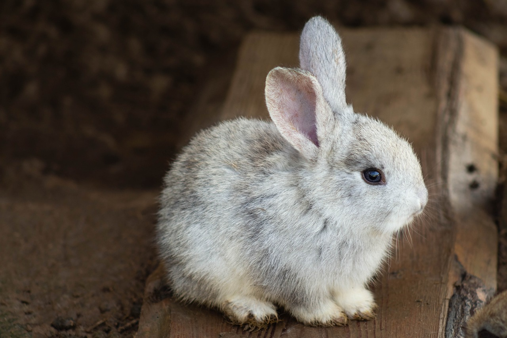

I thought it would be nice to include Bunny facts, as since I keep talking about them so I may as well include information about them!
- Rabbits and bunnies are the same animal – there’s no difference in breed or species, just the word we prefer.
- Rabbits and hares are “lagomorphs”, an order that also includes the pika, a small burrowing mammal that looks like a large mouse and lives in colder climates.
- Lagomorphs were originally classified as rodents, but in 1912 the distinction was made between them and rodents.
